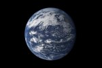
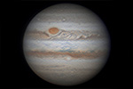
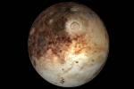

Earth (from Old English: Eorðe; Greek: Γαῖα Gaia; Latin: Terra), otherwise known as the World or the Globe, is the third planet from the Sun and the only object in the Universe known to harbor life. It is the densest planet in the Solar System and the largest of the four terrestrial planets.
According to radiometric dating and other sources of evidence, Earth formed about 4.54 billion years ago.Earth's gravity interacts with other objects in space, especially the Sun and the Moon, Earth's only natural satellite. During one orbit around the Sun, Earth rotates about its axis over 365 times; thus, an Earth year is about 365.26 days long. Earth's axis of rotation is tilted, producing seasonal variations on the planet's surface. The gravitational interaction between the Earth and Moon causes ocean tides, stabilizes the Earth's orientation on its axis, and gradually slows its rotation. Earth's lithosphere is divided into several rigid tectonic plates that migrate across the surface over periods of many millions of years. About 71% of Earth's surface is covered with water, mostly by its oceans. The remaining 29% is land consisting of continents and islands that together have many lakes, rivers and other sources of water that contribute to the hydrosphere. The majority of Earth's polar regions are covered in ice, including the Antarctic ice sheet and the sea ice of the Arctic ice pack. Earth's interior remains active with a solid iron inner core, a liquid outer core that generates the Earth's magnetic field, and a convecting mantle that drives plate tectonics.
Within the first billion years of Earth's history, life appeared in the oceans and began to affect the Earth's atmosphere and surface, leading to the proliferation of aerobic and anaerobic organisms. Some geological evidence indicates that life may have arisen as much as 4.1 billion years ago. Since then, the combination of Earth's distance from the Sun, physical properties, and geological history have allowed life to evolve and thrive. In the history of the Earth, biodiversity has gone through long periods of expansion, occasionally punctuated by mass extinction events. Over 99% of all species[35] that ever lived on Earth are extinct. Estimates of the number of species on Earth today vary widely; most species have not been described. Over 7.4 billion humans live on Earth and depend on its biosphere and minerals for their survival. Humans have developed diverse societies and cultures; politically, the world has about 200 sovereign states.

Jupiter is the fifth planet from the Sun and the largest in the Solar System. It is a giant planet with a mass one-thousandth that of the Sun, but two and a half times that of all the other planets in the Solar System combined. Jupiter and Saturn are gas giants; the other two giant planets, Uranus and Neptune are ice giants. Jupiter has been known to astronomers since antiquity. The Romans named it after their god Jupiter. When viewed from Earth, Jupiter can reach an apparent magnitude of −2.94, bright enough for its reflected light to cast shadows, and making it on average the third-brightest object in the night sky after the Moon and Venus.
Jupiter is primarily composed of hydrogen with a quarter of its mass being helium, though helium comprises only about a tenth of the number of molecules. It may also have a rocky core of heavier elements, but like the other giant planets, Jupiter lacks a well-defined solid surface. Because of its rapid rotation, the planet's shape is that of an oblate spheroid (it has a slight but noticeable bulge around the equator). The outer atmosphere is visibly segregated into several bands at different latitudes, resulting in turbulence and storms along their interacting boundaries. A prominent result is the Great Red Spot, a giant storm that is known to have existed since at least the 17th century when it was first seen by telescope. Surrounding Jupiter is a faint planetary ring system and a powerful magnetosphere. Jupiter has at least 67 moons, including the four large Galilean moons discovered by Galileo Galilei in 1610. Ganymede, the largest of these, has a diameter greater than that of the planet Mercury.
Jupiter has been explored on several occasions by robotic spacecraft, most notably during the early Pioneer and Voyager flyby missions and later by the Galileo orbiter. In late February 2007, Jupiter was visited by the New Horizons probe, which used Jupiter's gravity to increase its speed and bend its trajectory en route to Pluto. The latest probe to visit the planet is Juno, which entered into orbit around Jupiter on July 4, 2016.[16][17] Future targets for exploration in the Jupiter system include the probable ice-covered liquid ocean of its moon Europa.

Pluto (minor-planet designation: 134340 Pluto) is a dwarf planet in the Kuiper belt, a ring of bodies beyond Neptune. It was the first Kuiper belt object to be discovered.
Pluto was discovered by Clyde Tombaugh in 1930 and was originally considered to be the ninth planet from the Sun. After 1992, its planethood was questioned following the discovery of several objects of similar size in the Kuiper belt. In 2005, Eris, a dwarf planet in the scattered disc which is 27% more massive than Pluto, was discovered. This led the International Astronomical Union (IAU) to define the term "planet" formally in 2006, during their 26th General Assembly. That definition excluded Pluto and reclassified it as a dwarf planet.
Pluto is the largest and second-most-massive known dwarf planet in the Solar System and the ninth-largest and tenth-most-massive known object directly orbiting the Sun. It is the largest known trans-Neptunian object by volume but is less massive than Eris. Like other Kuiper belt objects, Pluto is primarily made of ice and rock and is relatively small—about one-sixth the mass of the Moon and one-third its volume. It has a moderately eccentric and inclined orbit during which it ranges from 30 to 49 astronomical units or AU (4.4–7.4 billion km) from the Sun. This means that Pluto periodically comes closer to the Sun than Neptune, but a stable orbital resonance with Neptune prevents them from colliding. Light from the Sun takes about 5.5 hours to reach Pluto at its average distance (39.5 AU).
Pluto has five known moons: Charon (the largest, with a diameter just over half that of Pluto), Styx, Nix, Kerberos, and Hydra. Pluto and Charon are sometimes considered a binary system because the barycenter of their orbits does not lie within either body.
On July 14, 2015, the New Horizons spacecraft became the first spacecraft to fly by Pluto. During its brief flyby, New Horizons made detailed measurements and observations of Pluto and its moons. In September 2016, astronomers announced that the reddish-brown cap of the north pole of Charon is composed of tholins, organic macromolecules that may be ingredients for the emergence of life, and produced from methane, nitrogen and other gases released from the atmosphere of Pluto and transferred about 19,000 km (12,000 mi) to the orbiting moon.